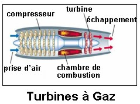
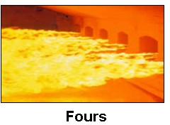
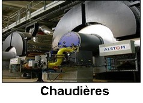

laboratoire d’Études des Systèmes Thermiques et Énergétiques
Combustion



Les activités de recherches en Combustion et Plasma ont pour objectifs l'étude de systèmes et procédés énergétiques qui font intervenir des sources de chaleur intenses tel que la combustion (brûleurs, fours, chaudières, turbines à combustion, moteurs à combustion, etc.) et les plasmas des arcs et décharges électriques (soudure à l'arc, disjoncteur, torche à plasma, les lampes à décharge, les réacteurs de déposition des couches minces, etc.).
Conventionnellement, toute recherche dans le domaine de la combustion a été motivée par un meilleur rendement énergétique et un minimum d'émission polluante pour préserver l'environnement. Notre activité en combustion conventionnelle se base sur ces principes. Néanmoins et dans l'avenir on s'intéressera aussi aux piles à combustible qui représentent un intérêt mondial dans le domaine de l'énergie pour un développement durable.
Dans le domaine des plasmas, l'intérêt mondial est orienté vers la maîtrise des phénomènes hors équilibre thermodynamique et chimique pour le développement d'une multitude d'applications industrielles telle que les appareils de coupure électrique, les réacteurs à plasmas, et les lampes à décharge très économiques en énergie et très fidèles en rendement de luminosité.
Objectifs du programme de recherche:
Les objectifs du programme de recherche en Combustion et Plasma sont :
La mise en place d’outils théoriques, numérique, et expérimentaux d’étude des transferts dans les écoulements réactifs en combustion et plasmas.
L’utilisation des outils mis en place et les connaissances acquises pour maîtriser et optimiser plusieurs systèmes et procédés industriels (brûleurs, turbines à combustion, piles à combustibles à base d'hydrocarbures, lampes à décharges, appareils de coupure électrique, réacteurs plasma).
Méthodologie et approche envisagées pour la réalisation du programme de recherche:
La méthodologie et l'approche envisagées pour la réalisation du programme de recherche sont développées dans ce qui suit pour les différents sous thèmes :
Combustion conventionnelle:
La simulation, à l’aide des modèles à concept de fammelettes, des flammes de diffusion turbulentes en milieu gazeux est actuellement maîtrisée. Dans le but d’élargir notre domaine de compétence, nous envisageons appliquer cette approche aux flammes de prémélanges. Dans une première étape, nous étudierons numériquement la structure thermochimique des flammes de prémélange laminaire. Ensuite, nous nous intéressons aux flammes de prémélanges turbulentes et éventuellement aux flammes partiellement prémélangées.
Compte tenu de l’importance du rôle des échanges radiatifs dans la stabilisation de la flamme et le préchauffage des particules, nous avons commencé à développer un modèle permettant l’évaluation de ces échanges dans un milieu gazeux chargé de particules. Nous sommes actuellement capable de prédire la distribution des flux radiatifs dans une enceinte cylindrique contenant un gaz chargés de particules solides. Le milieu étant supposé gris, absorbant, émissif et diffusif. En collaboration avec le Laboratoire d’Energétique et de Mécanique Thermique et Appliquée (Nancy) nous sommes en train de chercher à améliorer notre code en utilisant les fonctions de phase appropriées pour la diffusion des particules et en tenant compte de la nature, de la taille et de la concentration des particules. Pour tenir compte de la dépendance spectrale du rayonnement, le milieu sera assimilé à un milieu gris par bandes.
La concentration des particules dans les milieux diphasiques passe par la détermination de leur position. Dans ce contexte, des simulations numériques prévoyant le transport et la dispersion des particules solides dans un jet d’air turbulent sont actuellement menés. Dans une première étape, on a supposé qu’uniquement l’écoulement moyen agit sur les particules. Actuellement, nous envisageons, pour déduire la dispersion particulaire, tenir compte des interactions entre les particules et les fluctuations turbulentes de vitesses. Les outils théoriques mis en en place seront ensuite utilisés pour la simulation de la vaporisation des gouttelettes dans un jet d’air chaud. Il est évident que cette étude n’est qu’un premier pas vers la compréhension de la combustion dans les moteurs Diesel.
Conscient des dangers pour l’humanité occasionnés par les espèces polluantes, et particulièrement les oxydes d’azote, émis par la combustion des hydrocarbures, nous avons analysé les mécanismes de leur formation et les méthodes de leur réduction. Dans le cas de la technique « combustion étagée » de réduction des NOx, nous avons modélisé le foyer d’une turbine à gaz par une combinaison adéquate d’un ensemble de réacteurs idéaux. Actuellement, une autre méthode de réduction des NOx appelée « Flameless oxydation » est apparue. Il s’agit de créer la recirculation des produits de combustion à travers les réactifs frais. On obtient ainsi une zone de réaction diffuse sans piques de température. Il en résulte une réduction de la formation des NOx. Nous pensons combiner notre code de calcul de l’écoulement turbulent et le code ChemKin pour étudier numériquement cette technique.
Par ailleurs, étant convaincu par la nécessité de mener des études expérimentales au LESTE, nous envisageons nous doter d’un dispositif expérimental nous permettant de réaliser une combustion à bas NOx. Dans ce sens, et en collaboration avec l’équipe de Rouan (CORIA, France), nous envisageons réaliser la simulation et la conception d’un brûleur Gaz naturel - Air à bas NOx. L’équipe française, assurera la fabrication de ce brûleur. A priori, ce brûleur sera équipé d’une série de petits injecteurs de gaz naturel repartis autour d’un axe central et d’un jet d’air annulaire.
Combustion lente en lit fixe et combustion synthétique:
Nous avons développé un code numérique de simulation de l’écoulement et des transferts dans les brûleurs à lit fixe. Ce code est validé par comparaison avec des résultats expérimentaux obtenus à l’Université de Berkeley. Actuellement, nous envisageons utiliser ce code pour analyser les différentes techniques des traitements thermiques des déchets solides (combustion, incinération, thermolyse). Une attention particulière sera accordée aux problèmes de pollution.
Nous envisageons aussi, dans le cadre d’une collaboration avec le Professeur Calos Fernandez Pello de l'Université de Californie à Berkeley utiliser ce code pour étudier la combustion des mélanges des poudres solides en lit fixe pour la fabrication des matériaux composites pour différentes applications industrielles telles que les catalyseurs, les isolants électriques, etc…
Les piles à combustible et les réformateurs d'hydrocarbures:
La pile à combustible est un système qui permet la production silencieuse de l'électricité à partir, essentiellement de l’hydrogène, sans émission de polluants et sans pièces en mouvement. Le stockage de l’hydrogène constitue l'un des verrous technologiques à résoudre pour une utilisation commerciale de ces piles.
Actuellement, un grand intérêt est accordé aux piles SOFC (Solid Oxide Fuel Cells) qui peuvent utiliser comme combustible un hydrocarbure directement et/ou un mélange d'hydrogène, de CO et d'hydrocarbure. Ces piles sont moins coûteuses, mais leur rendement électrique reste plus faible que celui des piles utilisant l'hydrogène pur. D'où l'intérêt d'intégrer un procédé de transformation des hydrocarbures en hydrogène.
L'étude envisagée consiste en la modélisation et la simulation numérique des transferts de chaleur et de masse avec la cinétique réactionnelle dans la pile SOFC et lors de la transformation de l’hydrocarbure (gaz naturel, méthanol, essence, diesel, …) pour l’alimentation de ces piles.
Plasma d'arc et de décharge:
Dans la physique des milieux ionisés, l'arc électrique occupe une place toute particulière en raison du nombre et de l'importance de ses applications (lampe à arc, torche à plasma, soudure à arc, disjoncteur, laser, etc.). Les ingénieurs ont rapidement vu l'intérêt qu'on pouvait tirer de ce phénomène capable de transformer l'énergie électrique en énergie lumineuse ou thermique et de se comporter comme un réacteur de choix pour certaines applications (déposition de couches minces, gravure de puces électroniques, traitement de déchets, etc.). La réalisation des disjoncteurs nécessite de longues et coûteuses séries d'essais d'une part pour leur mise au point et d'autre part pour leur qualification. L'objectif de notre étude est de réaliser un code de simulation numérique de la coupure dans un disjoncteur à SF6, il s’agit essentiellement d’une simulation de l'arc électrique et de son interaction avec le gaz et les électrodes. Le code de simulation numérique qui doit être validé réduira le nombre d’essais nécessaires et aidera à dimensionner les appareils de coupure électrique. La modélisation fait intervenir certaines caractéristiques qu’il faut connaître. Il est donc nécessaire de faire des expériences pour déterminer ces caractéristiques et valider le code numérique.
Dans le domaine de l’éclairage, la lampe à décharge haute pression dans le mercure a été et reste largement utilisée. La recherche et l'amélioration des caractéristiques des sources de lumière sur le plan de l'efficacité, a conduit à introduire dans les décharges des additifs métalliques (thallium, indium,…) sous formes d'halogénures (iodure en général). Un premier travail a été consacré à l'évaluation des coefficients de transport dans le plasma d'une lampe à décharge haute pression dans le mercure dopé à l'iodure de thallium. Dans le cadre de la théorie de CHAPMAN-ENSKOG, on a calculé les coefficients de diffusion et de la conductivité thermique.
Nous envisageons maintenant étudier numériquement la convection naturelle et les phénomènes radiatifs dans la lampe, ainsi que les instabilités électriques et thermiques qui peuvent être néfastes dans certains cas.
Concernant les réacteurs à plasma, on s'intéresse aux décharges radiofréquence dans les mélanges NH3/SiH4 pour les dépôts de films minces de nitrures de silicium. L'objectif de notre étude est la mise en place d'un code de calcul pour la simulation numérique des réacteurs à plasma.
Tout d'abord, une étude bibliographique sur les processus de dépôts chimiques en phase vapeur de films minces par la méthode "PECVD" (Plasma Enhanced Chemical Vapor Deposition) sera effectuée. Ensuite, nous nous intéresserons à la formulation mathématique.
La discrétisation des équations sera effectuée par les méthodes de volumes finis à base d’éléments finis en configuration axisymétrique. Après avoir valider le code, nous l’utiliserons pour simuler les réacteurs à plasma.
Opportunités de valorisation des résultats de recherche:
Les outils numériques développés et les résultats obtenus permettront d’optimiser et de concevoir plusieurs systèmes et procédés (brûleurs, fours, contacteurs et interrupteurs électriques, piles à combustibles, réacteur à plasma, lampes…..) et par conséquent, peuvent être valorisés directement.